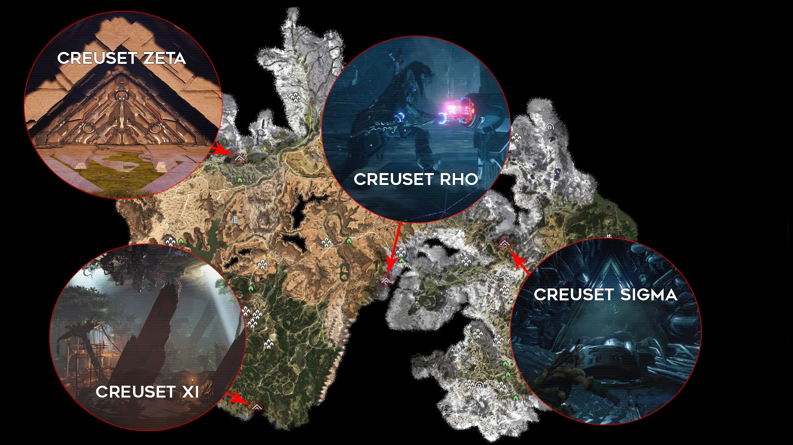

Les creusets sont des donjons facultatifs et sont au nombre de quatre. Ils ont été construits à l’époque des anciens et vous permettront de vous révéler quelques secrets sur cette époque mais surtout de débloquer le piratage de nouvelles machines et de gagner en même temps un point de compétence et de l’expérience, rendant ces donjons facultatifs particulièrement utiles. Vous devrez y affronter différents robots, le tout dernier étant un boss qui peut être redoutable.
Où sont les différents creusets ?
Les quatre creusets sont disséminés un peu partout sur la carte, ce qui sous-entend qu’il va falloir prendre quelques niveaux avant de pouvoir les faire. Cela se vérifie dès le premier, puisque le creuset SIGMA offre un défi pour le niveau 8. Il s’agit de mini-donjons qui vous récompenseront donc avec beaucoup de ressources, mais également un noyau.
Creuset SIGMA
Le creuset SIGMA est le premier disponible et propose un défi recommandé au niveau 8. Son entrée est située au nord du village de la Couronne de la Mère. Une fois la porte crochetée avec votre lance, il va vous falloir parcourir les couloirs de ce donjon pour arriver jusqu’au trésor.
Creuset ZETA
Le creuset RHO est recommandé au niveau 11 et plus, mais le boss vous donnera du fil à retordre. Son entrée, protégée par un gouffre, se trouve au sud de Daytower. Il va vous falloir escalader la paroi pour descendre jusque là et entamer votre périple.
Creuset XI
Prévu pour le niveau 18 au minimum, le Creuset XI offre un défi par la multitude d’ennemis présents. L’accès se trouve au sud de la forêt Méridian, et un campement de fanatiques s’y trouve installé. Vous n’avez donc d’autre choix que de les tuer, avant de pénétrer dans le donjon.
Creuset RHO
Dernier creuset, il est recommandé d’y pénétrer une fois le niveau 20 atteint. Il vous faut alors vous rendre au nord de Meridian pour trouver l’entrée. Si l’exploration est quasi inexistante pour ce donjon, les combats qui vous y attendent seront les plus difficiles à mener.